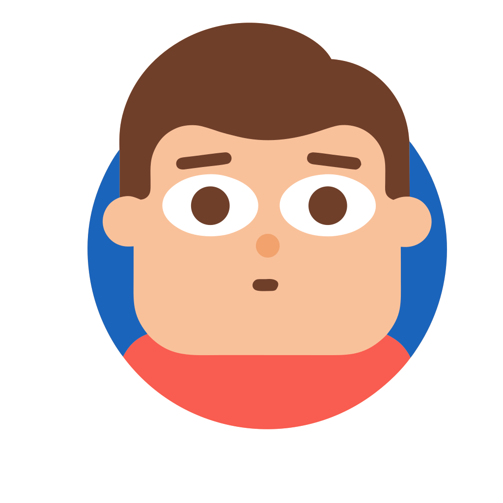
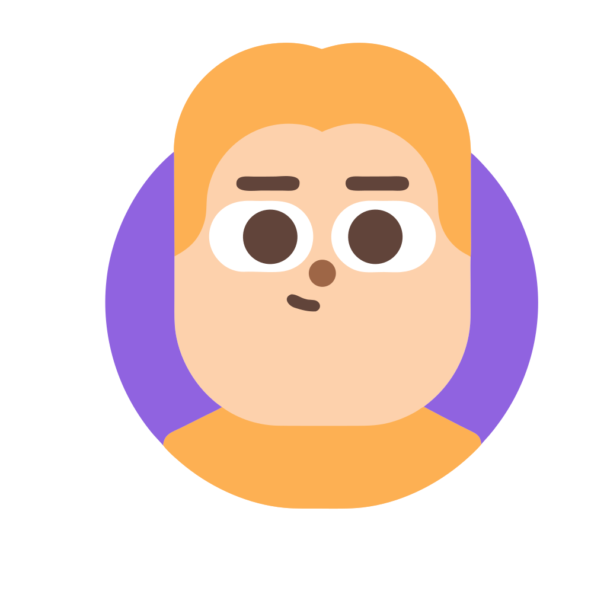
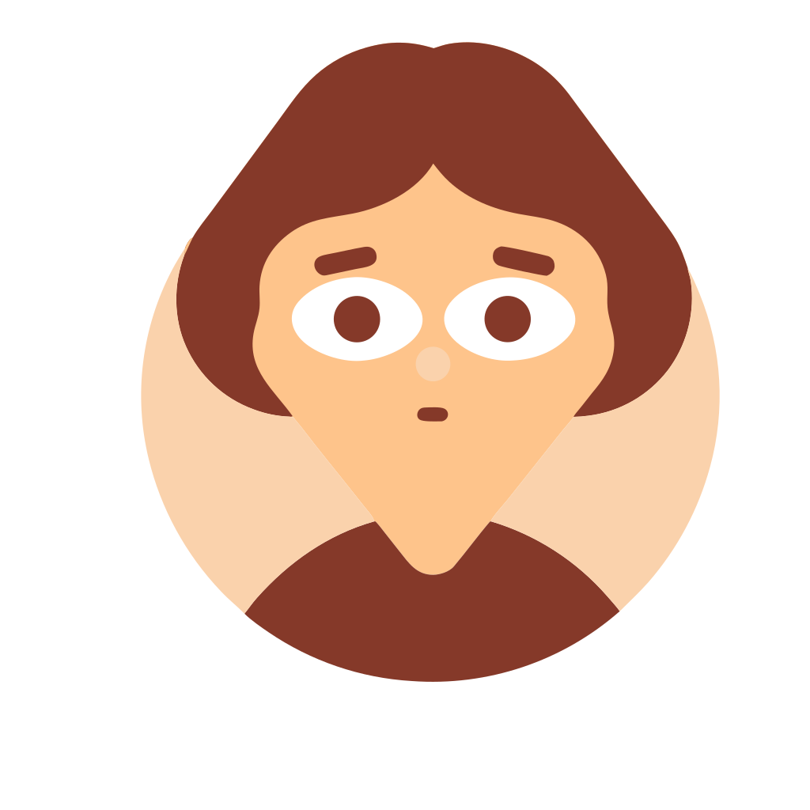
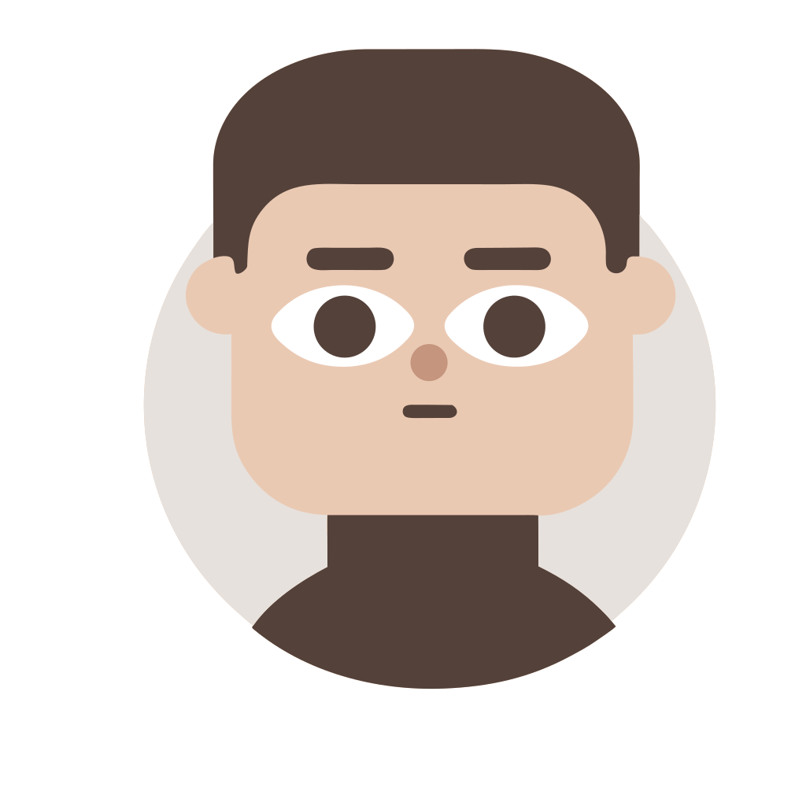
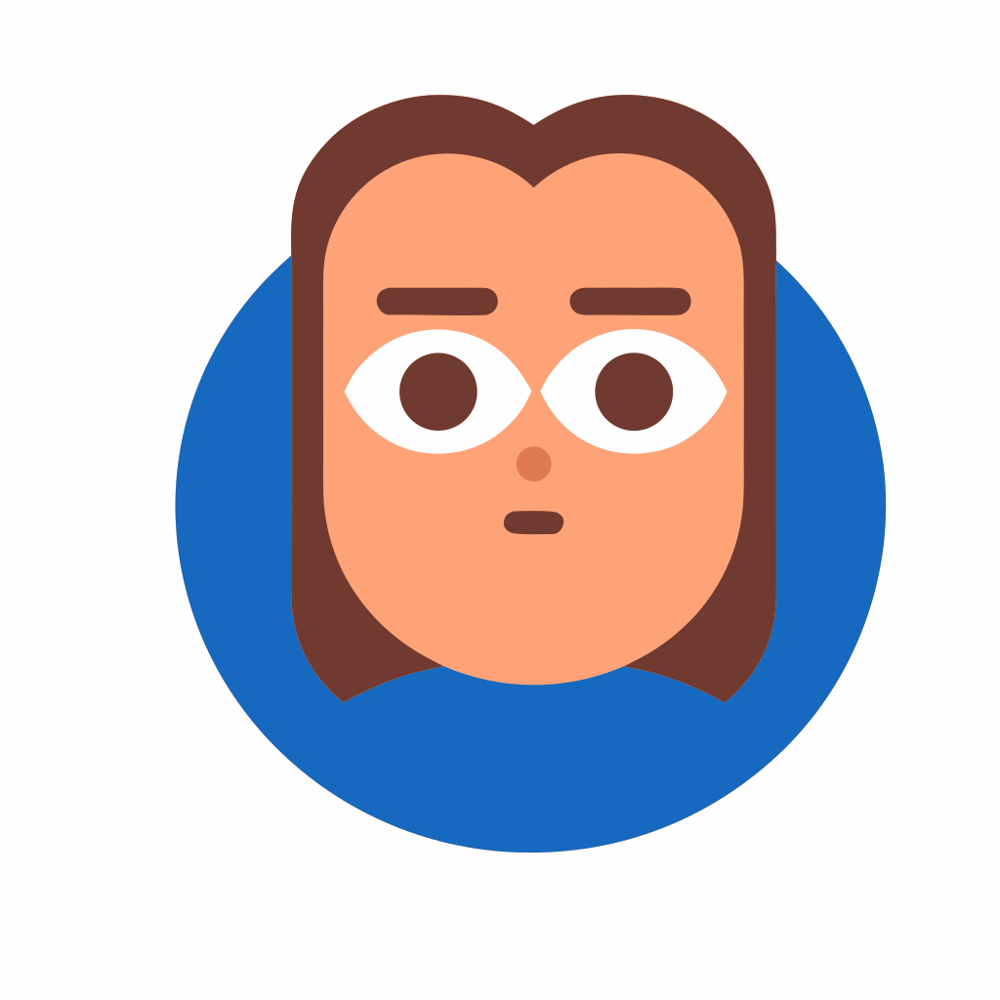
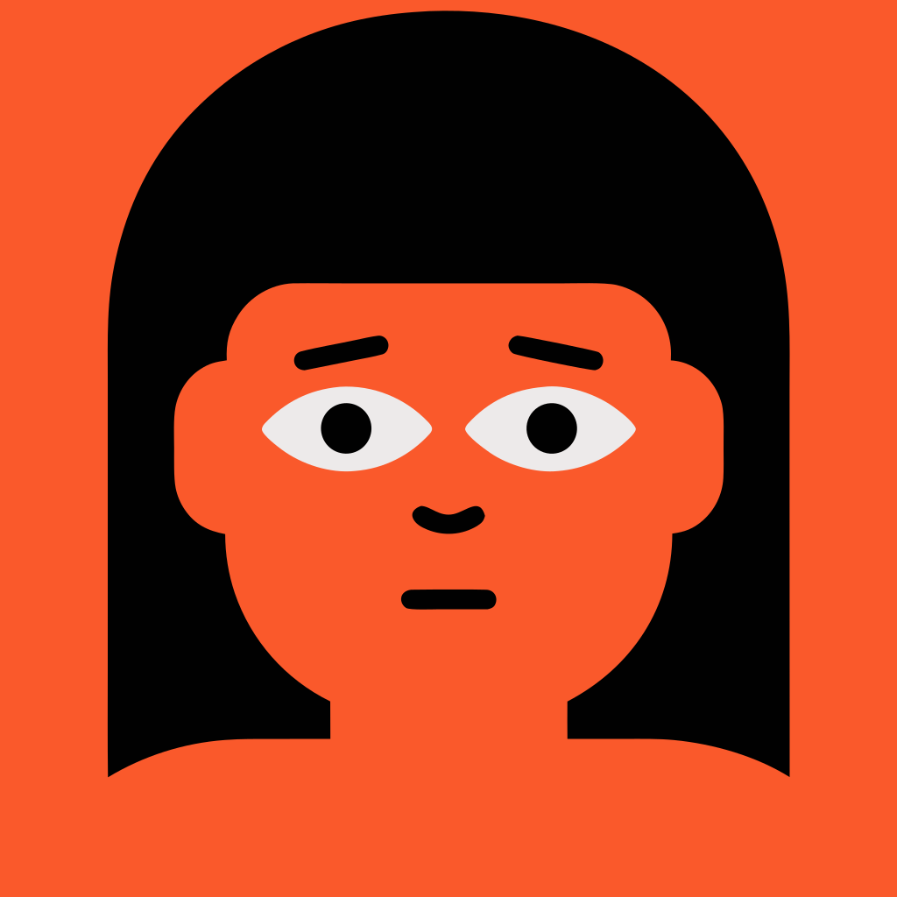
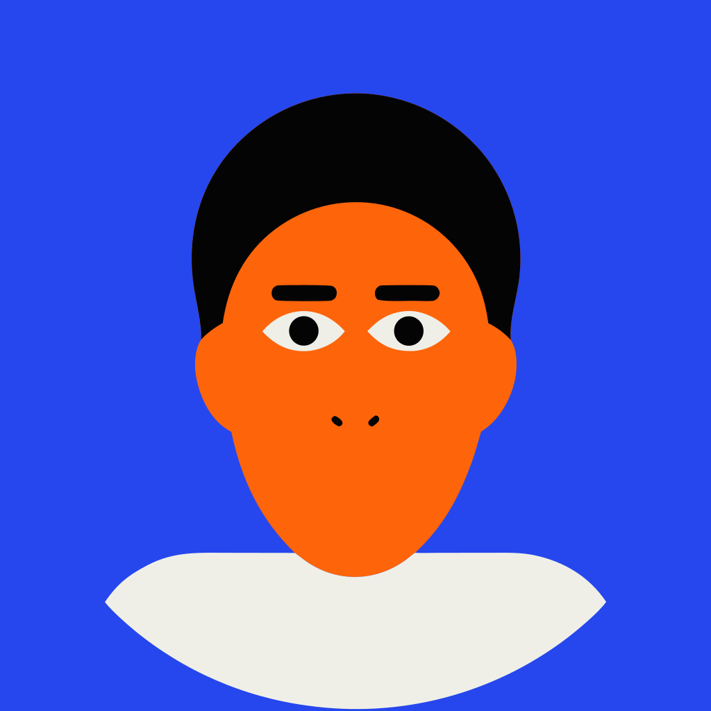
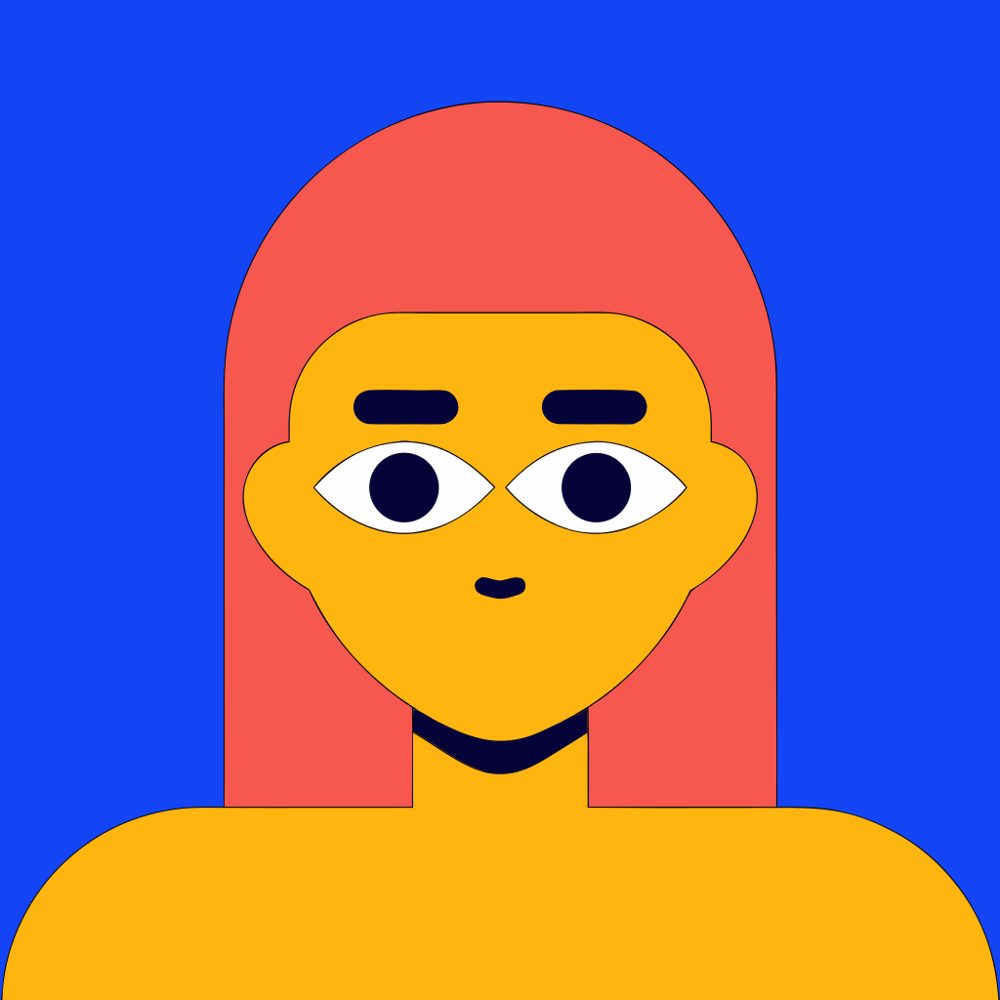
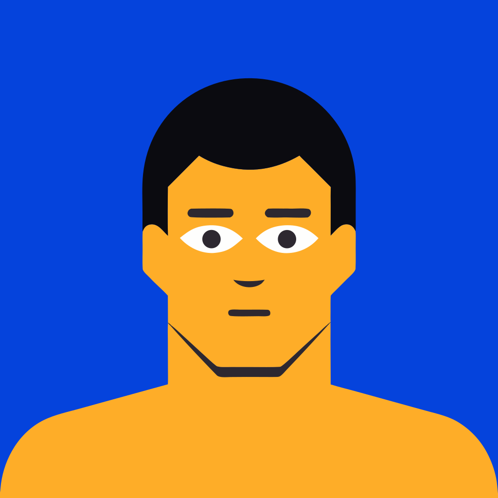
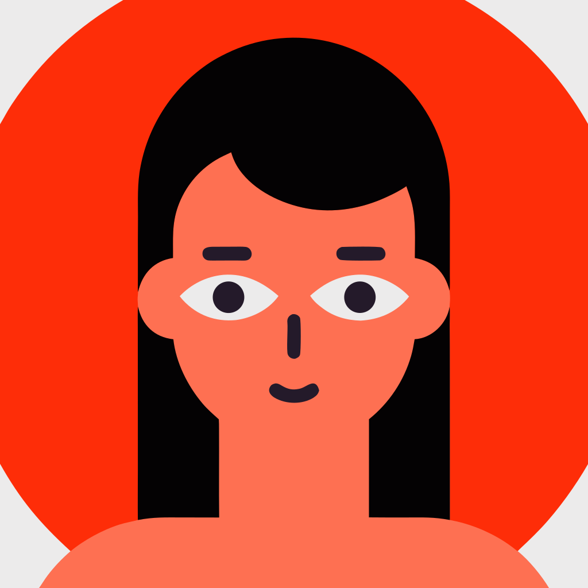

14 Sep 2026. Newest round first. Rounds 1 and 2 are kept because what they ruled out is the reason round 3 is shaped the way it is.
Round 7 — a full disc, and six head shapes
Both by geometry, no generation — which is just as well, since the Recraft balance is empty. The
background is now a single circle sized to contain every point of the figure, drawn behind everything,
replacing the two crescents. The six heads are warps of one approved outline, which is what §7c.1
concluded a new shape actually is: "a designer's five minutes, or a warp of an approved outline — not
a prompt." A warp also holds "everything else the same" exactly — a generation rerolls the hair, the
colour and the features every time.
Measured on the flattened outline — widest row, and where it sits:
base 1830 @ y1120 · widejaw 2052 @ y992 · tapered 1726 @ y1312 ·
squarejaw 1911 @ y1088 · narrow 1742 @ y1312 · long 1830, 1862 tall.
Two axes, not one: how wide, and how high the widest row sits.
The eye whites measure 423 and 421px in all six — features translate, they never deform.
⚠ tapered and narrow are still within 1% on width (1726 / 1742). They differ in that narrow takes
the whole skull in, not just the jaw — visible in the hair. If you want six that are clearly six, that
pair is the one to re-cut.
🔴 Similarity assessment:
2026-09-14_avatar_duolingo_similarity.md.
On appearance the case is reasonable — every element you would name as Duolingo's (glasses, blush,
freckles, beards, split backgrounds, hand-drawn wobble) is absent, and SportPool blue is 11.6–27.4% of
every 5a tile against zero in theirs. On provenance it is not: 5a descends in two documented
generations from a style trained directly on their artwork. Treat 5a as the brief and apply it to the
Avataaars rig we already chose on licence grounds (§7b.1).
Round 5 — six SportPool directions
The brief: keep the playfulness, add what SportPool actually is — large radii, the primary blue, a
degree of restraint. Six directions, from our own construction grammar rather than from the reference.
It was run twice, and neither run is the answer.
5a — anchored on the approved bases. The art holds and the six directions
collapse into one. 4-outline came back with no outline anywhere; capsule, outline and
glyph are indistinguishable. style_match: 'flexible' is the loosest V4 offers and the anchor
still won. This is §7e.5's "the style pins the composition" working against us.
5b — the same six, prompt only, no anchor. Now they are six genuinely different
directions, and the drawing falls apart: masks on sticks, a ghost, a black silhouette, and the blue
leaking onto skin. §7c.8, exactly: it cannot hold all the variables at once.
🔴 Round 6 is designed and blocked on credits. Neither side of that fork is the
answer, so the next run gives each direction its own style built from two weighted images — the
approved base at 0.4 for warmth, proportion and framing, and that direction's own 5b sketch at 0.6 for
the thing that makes it itself. scripts/gen-avatar-blend.mjs is written and ready;
/users/me reports 3 credits left.
Round 4 — the SportPool palette
The three you circled, recoloured rather than regenerated (§7c.4: generate for form, recolour for
palette). No API calls, nothing lost from the art you picked. The ground is the user's identity colour —
avatarGradient's first stop, the same colour their initials already carry — and the kit is a
colourway off lib/design/tokens.ts. Skin and hair are untouched, per §5.3.
The two things this had to get past, both measured: the background disc is two
half-elements, and in two of the three the hair and the jersey are the same fill. Recolouring by
colour value dyed the hair to match the shirt; roles are resolved from rendered geometry instead.
§4.4: a pool card renders a person at 24px, a banter row at 32px, a member list at 36px. Shown on both
grounds, because the app has a light and a dark theme.
These are cropped, and the crop is the reason they work at 24px. Measured under a
circular crop of the raw canvas: 45–48% of every avatar was white margin and only 5.5–11.4%
was the identity colour — on midnight that margin renders as a white ring. Re-cropped to the
figure via viewBox (which react-native-svg honours, unlike a transform string — C1), the
margin drops to 3–5% and the identity colour rises to 7.8–17.6%.
⚠ B-S1 is the weak one at 7.8%: its head is large against its disc, so the identity colour barely reads.
snow
midnight
Round 3B — reference-led, five shapes
The five reference tiles built into one vector style, which then carries the look so the prompt only
has to say who. Same five shapes as round 2.
⚠ This style is built from third-party character art. Fine for deciding a direction.
The licence question bites when art generated from it ships — and §7c.8 already notes a Recraft asset may
not be copyrightable at all, which matters because the plan is to sell cosmetics on top of this.

B-S1-roundsquare
14 paths · 6 fills⚠ 6 fills

B-S2-oval
14 paths · 6 fills⚠ 6 fills

B-S3-tapered
15 paths · 4 fills

B-S4-squarejaw
14 paths · 5 fills

B-S5-long
12 paths · 5 fills
Round 3A — the same simplification, prompt only
Identical prompt and shapes, no style reference. This is what the words alone buy: the count comes down
(10–17 paths, 3–7 fills) but the colour and the composition do not land.

A-S1-roundsquare
10 paths · 3 fills

A-S2-oval
12 paths · 4 fills

A-S3-tapered
16 paths · 7 fills⚠ 7 fills

A-S4-squarejaw
15 paths · 5 fills

A-S5-long
17 paths · 5 fills
Round 2 — the look pinned, the skull varied
Three surviving directions from round 1, each turned into a Recraft style and re-run across five head
shapes. A row is one art language; along a row, only the skull is meant to move.
Read the rows, not the faces. The question this sheet answers is which row could be
the base — the one every user customises — and whether its five shapes are different enough to be worth
offering as five.
One prompt, two extreme head shapes, six art directions. D3–D5 use the V3 curated vector styles and
return illustrated scenes rather than avatars — that is a structural failure, not a taste call,
and it is why round 2 is V4.1 only.